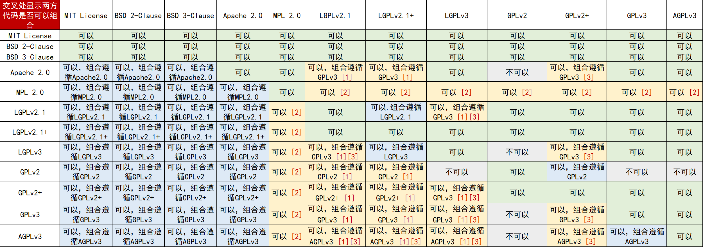
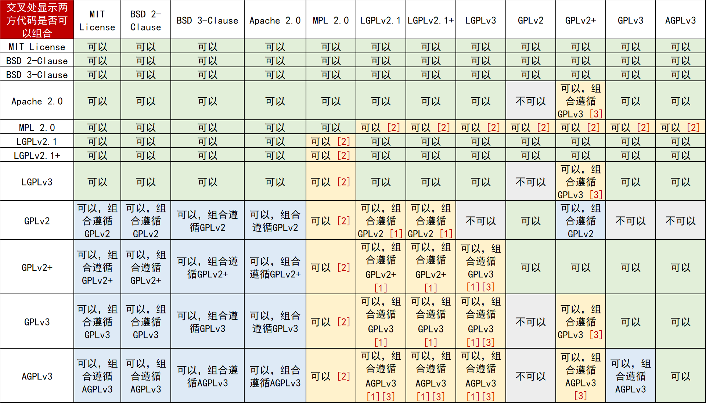
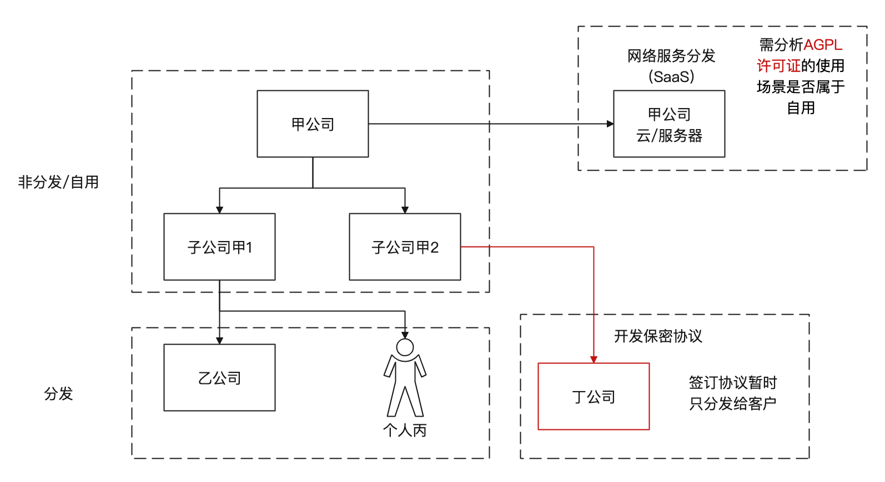
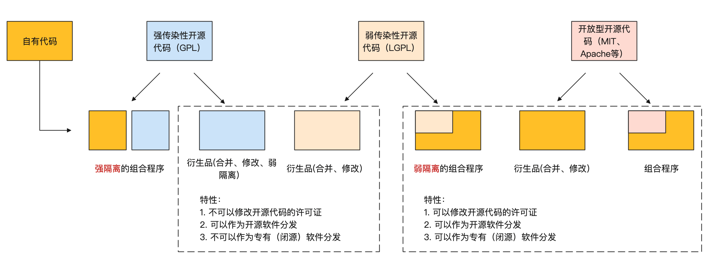

开源法务合规实践
案例一：GPL 相关的国内索赔案件
- A 公司员工 C 在 2016 年离职，2017 年加入 B 公司
- A 公司发现 B 公司存在明显抄袭软件的迹象
- 2018 年 10 月，A 向南京市中级人民法院提起诉讼，要求赔偿 385.5 万元，2020 年 12 月，法院判 B、C 赔 A 钱 130 万元。
- 2021 年，在 A 诉讼 B 的三年后，A 发现 B 居然还在卖抄袭的软件，再次索赔，索赔的金额高达 2000 万
- B 公司的辩护律师发现：A 公司的软件使用了开源软件 SharpZipLib，而这个软件用了 GPL！
- 法院认为：A 自己没有遵循开源协议，有错在先。有侵权错误的 A，去告有侵权错误的 B，虽然是侵权对象不同，但都是知识产权侵权，法院如果判 B 侵权，就是偏袒了 A。所以法院不支持 A 的控诉。
- 但是：B 公司的另一个小模块“预览程序”，没有被GPL“传染”，因此确认：被告的侵权获利为XXX万元。法院决定3倍惩罚，判B赔偿3倍的XXX万元。
A 公司的失误有哪些？
- A没有充分注意到开源许可证
- A没有认真考虑过许可证合规
- A没有及时跟进zip库这个开源项目，原来早在2016年5月份，zip库就改为MIT了。
开源许可证兼容性指南
开源许可证兼容性的定义
适用不同许可证的两个开源程序合并成一个较大的程序，或者把其中之一的代码合并入另一个时，如果各个许可证的限制或条件没有冲突，允许该种合并，我们就可以说这些许可证是兼容的。
常见开源许可证的兼容性列表
开源许可证兼容性列表的使用场景是针对开源项目选择许可证，假定有一个开源软件使用了一个许可证，而你想把它的代码组合到你要发布的开源项目中。 许可证的兼容性列表可以分为以下两种情况：
- 合并/修改代码：从要组合的代码中取出整体/部分代码，修改或不修改都可以，然后把它添加到你的代码中构成一个作品。
- 使用库：没有直接复制代码，在编译或运行时通过链接、导入或其他典型的机制（例如静态与动态链接）把要组合的开源代码绑定在一起。
备注：（下方内容可以对应到兼容性列表中有【1】【2】【3】的项）
- 【1】LGPLv2.1 允许你把代码重新按照 GPLv2 以后的 GPL 许可证发布。所以如果你可以把 LGPL 的代码按照合适的 GPL 版本发布，那么你就可以组合两方代码。
- 【2】MPL的代码和GPL系列的代码组合的结果是，MPL协议的代码遵循MPL协议，GPL系列的代码遵循GPL系列协议，所以原来按照 MPL 发布的那些文件还是可以使用 MPL 条款的，组合而成的作品整体上可以按照GPL系列的许可证发布。
- 【3】查看双方的许可证协议中是否包含一个条款允许你将协议升级到稍后的版本。例如，LGPLv2.1和GPLv3是不兼容的，但如果两方的许可证协议中都包含“可以升级到更高版本”的条款，那么LGPLv2.1就可以升级到LGPLv3，LGPLv3和GPLv3、AGPLv3是兼容的。
- LGPL+与GPL+代表许可证授予用户将许可证升级到未来版本的权利，例如LGPLv2.1+意味着用户可以把许可证升级到LGPL v2.1之后的版本。
- 下方的表格第一行展示了你的项目要使用的许可证，左边第一列是你要组合的软件带有的开源许可证，他们之间的交叉处显示了你是否可以组合他们。
合并/修改代码的许可证兼容性列表
使用库的兼容性列表
软件分发场景判断
首先，我们要先判断我们的组合程序属于自用还是分发。如果组合程序属于自用，那么我们就可以无视开源许可证的规定与要求；如果组合程序属于分发，那么我们可以继续查看下图。

当组合具有传染性许可证的开源代码时，用户会有不想使用传染性许可证或闭源发布作品的需求，那么我们就可以通过一些技术隔离方法来实现自有代码不被传染性代码传染。
隔离方法按照强度可以分为强隔离与弱隔离，弱隔离可以隔离弱传染性许可证（LGPL），强隔离可以隔离强传染性许可证（GPL）。
弱隔离
静态与动态链接
LGPL许可证：如果将LGPL库与你的程序一起分发，无论是静态还是动态连接，那么你也必须分发该LGPL库的源文件。(1) 如果你是静态连接到LGPL库，那么你要提供程序的目标代码，这样用户就可以修改该库并重新连接成程序。(2) 如果你是动态连接到已在用户电脑上的LGPL库，那么你不必分发该库的源代码。
AGPL，GPL许可证：把AGPL，GPL许可证下的代码和其他模块静态或动态连接在一起就是在基于GPL作品合成一个作品。因此，GPL、AGPL许可证的条款和条件涵盖整个组合作品，你必须分发所有源代码。
强隔离
聚合体
聚合体是由多个独立的程序组合而成的共同体。GPL允许你制作并发布一个聚合体，即使其他软件的许可证不是自由开源许可证，不是GPL兼容的许可证或闭源分发也可以。唯一的条件是你不能禁止用户行使每个独立程序许可证所允许的权利。
如何区分是两个独立的程序，还是一个程序的两个部分呢？这本质上是个法律问题，会根据不同国家、不同地域的法律规定产生变化，但又无法脱离技术。从技术方面来看，独立程序的标准既依赖于通信机制，也依赖于通信语义（交换了什么样的信息）。
进程间通信的方式有很多，例如：
- 消息传递（管道、FIFO、消息队列）
- 同步（互斥量、条件变量、读写锁、文件和写记录锁、信号量）
- 共享内存（匿名的和具名的）
- 远程过程调用
- Socket通信
如果两个模块都包含在一个可执行文件里，或者两个模块运行时共享内存，那么它们一定是同一个程序。反过来，管道、sockets通信和命令行参数通常都是两个独立程序的通信机制。但是如果两方的通信语义非常密切，共享内部数据结构，那么它们也被会认为是一个大程序的两个组合部分。